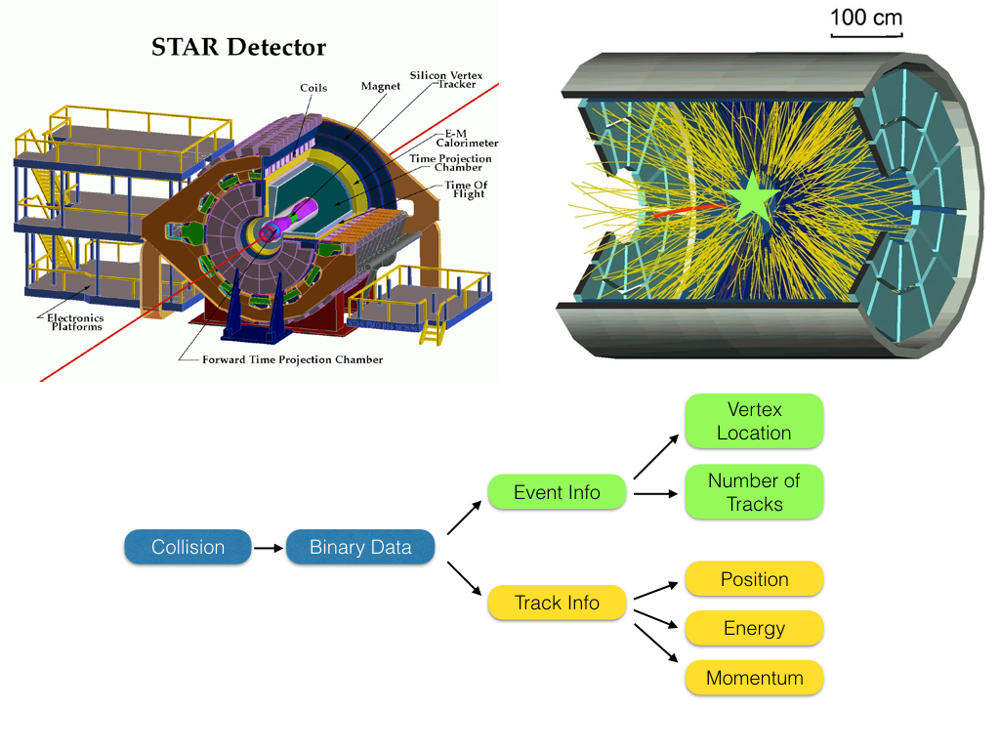
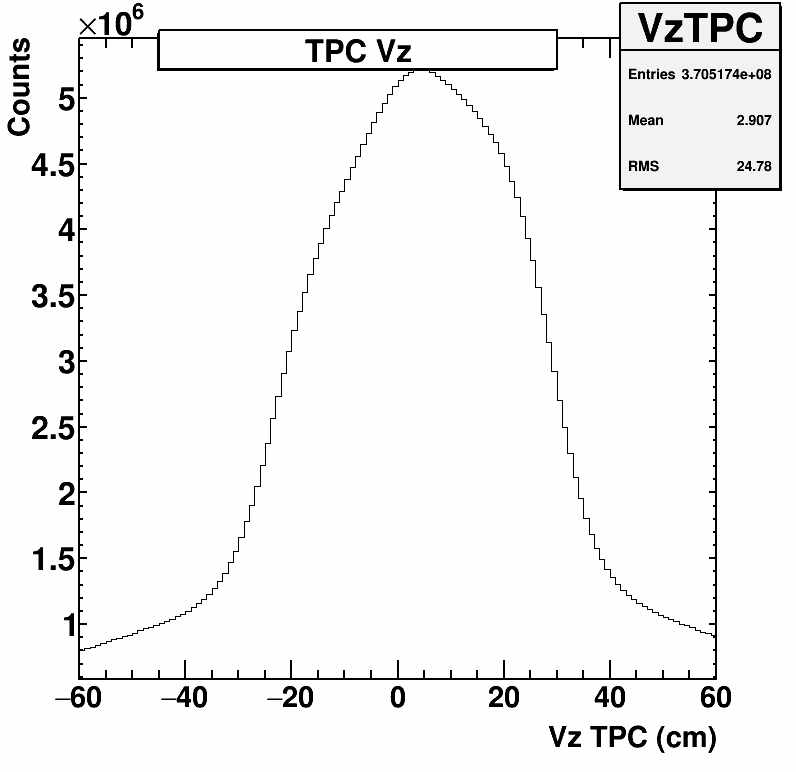
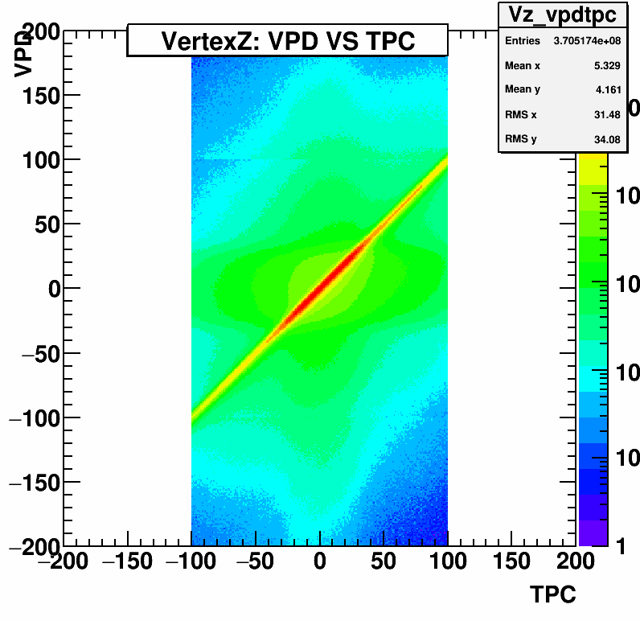
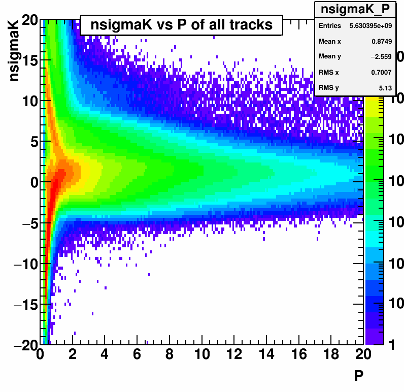
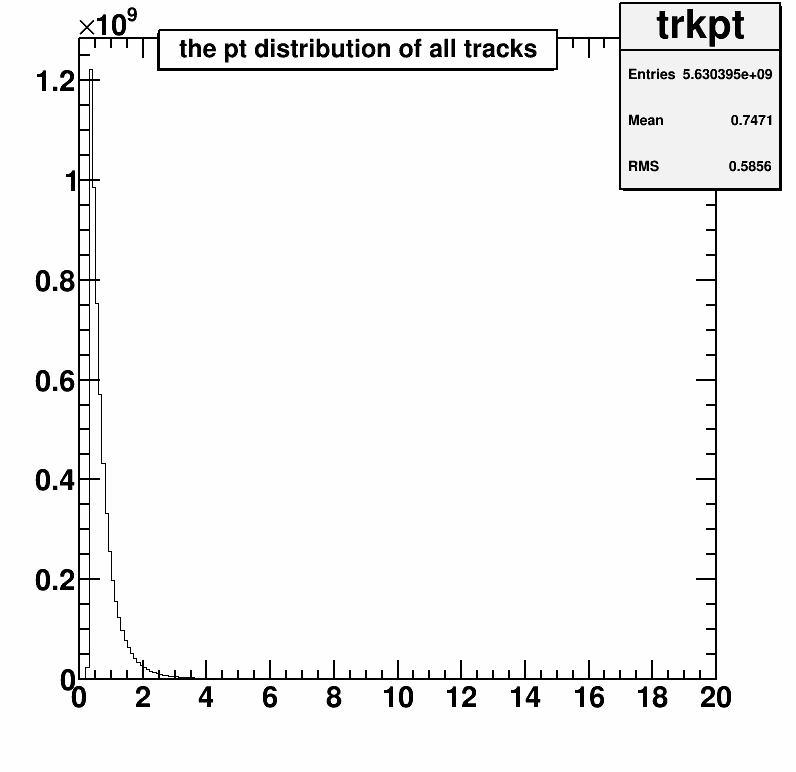

Physics Analysis Tree Maker
November 27, 2016 - C++One of the great challenges of working with large-scale detectors like the STAR detector is the sheer volume of data that one must organize and control. One of my main contributions to the analyses of our group at University of Illinois at Chicago is the implementation and maintenance of a code project that helps manage all of that data. To help understand that project, I think it's worthwhile to understand the full "path" of the data as we go from particle collisions to results. The image below will help show how that works.  At the top-left is a schematic of the STAR detector. There are many detector systems, but I'd like to highlight the Time Projection Chamber (TPC) and the Barrel Electron-Magnetic Calorimeter (BEMC; listed as E-M Calorimeter). For the purposes of this discussion, I will be focusing on these detectors. The TPC is a large chamber filled with agas that ionizes when a charged particle moves through it. This chamber has both an electric and magnetic field applied throughout, so that the ionized gas "floats" toward the ends of the detector where it can be collected and converted into digital information. The E-M Calorimeter is a large barrel of plastic detectors, when a particle goes into this plastic and is stopped by interacting with the plastic, it releases light. This light can be collected and converted into digital data as well. All of the data from these detectors, are what we will focus on keeping in our analyses.
In the top-right is a diagram of a typical particle collision event. I've added a star to show where the collision occurred in this event. All of the yellow lines are individual particles coming out of the collision. These are called "tracks" and the collision is known as the "vertex." When an event occurs, each of these tracks is actually just a chain of ionization within the gas, and perhaps an interaction within the BEMC. For our analyses we want to have a set of tracks associated with an event, and each track and event should have well-known physical properties that we extract from the data, as shown in the simplified flow chart.
This is where the large amount of data comes from. Each track has dozens of "hits" in the TPC collected from the ionized gas collection. There can be hundreds of tracks, and each one has dozens of hits, each hit is categorized by four 11-bit values. Beyond that, there are thousands of BEMC panels, and each one of these must be read out and some determination of whether that panel belongs to a track must be done (each of these read-outs will be dozens of 11-bit values). From there, STAR has a conversion from binary data to tracks and event classes, with many values associated with each. We do this over and over for millions upon millions of events. When all is said and done, for a given dataset we may have 100s of terabytes worth of information saved.
And there-in lies a new challenge. Physics analyses are quite iterative, we might process all the data once to see what changes we need to make to select different particles or how to select events better or... and then repeat these iterations for months. Iterating over 100s of terabytes can take an extreme amount of time that is prohibitive to analysis. With this in mind, my co-worker, Bingchu Huang, and I designed a method to minimize the amount of data we actually need to iterate over. This method takes advantage of the tree structure in ROOT which is a form of Tuple. The idea of this code is to only keep the information necessary for our analysis instead of keeping all of the data for each track, and also to minimize the memory usage of each data structure by limiting the precision.
Necessary Information
 The first key is to minimize the number of "junk" events in our dataset. There are a few bits of information that we want to consider when considering whether to keep an event or not. The first is whether the vertex position (where the collision occurs) is in a region that is close enough to the center of the detector that the detector works at optimal efficiency. This is the "Vz" distribution shown at left. We want to select a region around 0 cm, with some reasonable, but fairly non-restrictive width, such that each analysis can set a tighter cut if necessary. The other key is we want both of the vertex finding detectors to agree on the position of the vertex. The plot at right shows the correlation between the two detectors on the Z-position of the vertex. We can make a cut perpendicular to the correlation by selecting only events where there is a 1:1 correlation, within some tolerance. These requirements help us to remove useless events that are technically "true" events, but that will not be useful in our analysis.In STAR's main data format, every track is recorded and every possible piece of information for the track is recorded. This is a massive waste of space if you are only interested in one type of track, and there are dozens of track "types." In order to reduce this, our code splits tracks into multiple sub-classes, and each class only records the information necessary. As an example, in my analysis we are most interested in electrons, so for electrons we will record many pieces of data. We need all the information to identify electrons, the position of the electron's starting point relative to the vertex, all of the kinematic information, etc. However, for tracks where we are only going to compare kinematic information to establish correlations, we have no need to keep the particle indentification information. Based on this idea, we can separate the tracks into two classes: "likely electrons" and "all tracks." We can do a similar method for identifying muons, pions, and kaons. How we identify these particles is worth a separate discussion, but a quick example can be seen at left. This shows the energy loss of all tracks in the TPC. You can see there are many different bands, and each band corresponds to a different type of particle for a given momentum (P). By making selections on variables like this (and others like time between collision and interaction with BEMC), we can make loose selections on particle type and only save the necessary information for a given track type.
Another key is to only keep tracks that are physically useable. The key to this is a physical understanding of the detector. Given the large magnetic field, a charged particle will be forced to move in a circle. If the particle does not have enough energy to make a circle with a radius large enough to reach the outside of the detector, it will spiral forever and not be a collected correctly. To overcome this, we can require that the track have some minimum momentum. This is a huge memory savings due to the distribution of track momenta, as shown at right. The vast majority of tracks have small momentum, so if we do an initial screening to remove those tracks that have a momentum below the usable range for our analyses, we can remove lots of tracks that we'd later have to remove during each iteration.
Minimizing Precision
The other method we use for memory management is to mimimize the precision of the stored value. The natural way to store the information is to just assign each value read out as a C++ float and then store it in the ROOT Tree on a track by track level. However, this may not be necessary for some values. As an example, when looking at the distance between the vertex and a track, we know that the detector has a resolution of a few millimeters, which means if we save a float that extends out into femtometer acccuracy, it's actually just storing junk. In order to minimize this "junk," we can store the values as an integer or a short by multiplying the float value by some "encoding" value and providing a decoding function to access the value. This is shown below as an example:
void getDataAndEncode(){
float dcaF = STAR->GetDistanceToVertex();
DCA = (short)dcaF*10000; //Private Class Instance Member
}
float getDCA(){
return (float)DCA/10000;
}
float dcaF = STAR->GetDistanceToVertex();
DCA = (short)dcaF*10000; //Private Class Instance Member
}
float getDCA(){
return (float)DCA/10000;
}
This example shows a method of encoding a float to a short, lowering the memory requirement by 1/2 while not losing any "real" information due to the detectors resolution. This can be done for almost every piece of information for every track. For an analyzer, this just means that they cannot directly load a class object and access the member variables, but must instead access the values through a "getter" function; which is actually a bit safer such that no value is ever accidentally over-written.
Summary
So then, how well does this work? It's an easy result to quantify, since we have access to the before and after size of the data. The STAR official production for the Run 15 p+p collision data has a size of over 300 TB. After conversion to the analysis ROOT tree that our analyses are based upon, we only store about 5 TB of data, a reduction by a factor of ~60. Similar results are seen for other datasets as well. When reading the data, instead of taking a week on the computing cluster to iterate through all of the events, the analysis tree takes less than 6 hours.The functionality of this code is limited to only preparing an analysis tree for our specific analysis needs, as we've customized this output to be prepared for our work. However, we now have 6 analyses based on these trees, meaning that the result of this code is being used to look at dozens of physics puzzles at the moment. The ability to collate and prune the mass of data from STAR into small, usable clusters is key to making our group competitive in the physics analysis world; and the analysis tree maker has been successful in providing this ability.